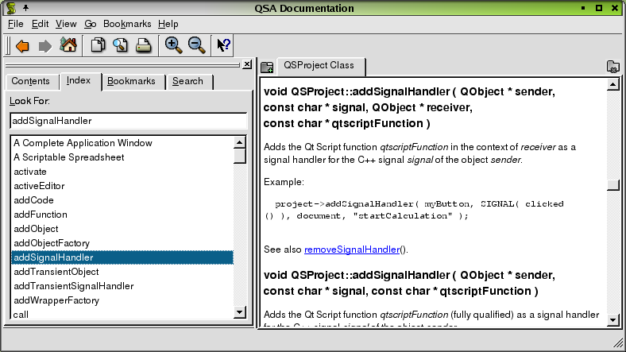
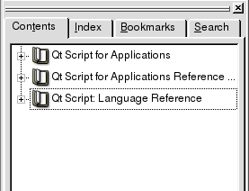
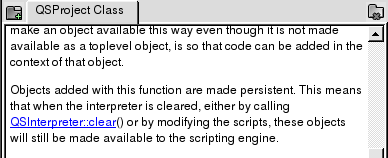
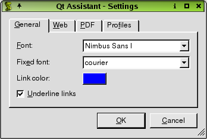
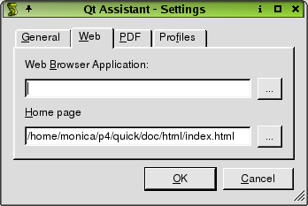
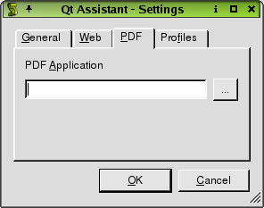

| Home | All Classes | Main Classes | Annotated | Grouped Classes | Functions |
[Prev: The 1 Minute Guide to Using Qt Assistant] [Home] [Next: Full Text Searching]

Qt Assistant

The sidebar provides four ways of navigating documentation:
The Contents tab presents a tree view of the documentation sets that are available. If you click an item, its documentation will appear in the documentation window. If you double click an item or click a '+' sign to the left of an item, the item's sub-items will appear. Click a sub-item to make its page appear in the documentation window. Click a '-' sign to the left of an item to hide its sub-items.
The Index tab is used to look up key words or phrases. See The 1 Minute Guide to Using Qt Assistant for how to use this tab.
The Bookmarks tab lists any bookmarks you've made. Double click a bookmark to make its page appear in the documentation window. The Bookmarks tab has a New Bookmark button and a Delete Bookmark button at the bottom. Click New Bookmark to bookmark the page that is showing in the documentation window. Click a bookmark in the list, then click Delete Bookmark to delete the highlighted bookmark.
The Search tab provides full text search of all the documents. See Full Text Searching for more information about this feature.
If you want the documentation window to use as much space as possible, you can easily hide or show the Sidebar. If the Sidebar is showing, press Ctrl+T, Ctrl+I, Ctrl+B or Ctrl+S to hide it. If the Sidebar is hidden, press Ctrl+T to show it on the Contents tab, or press Ctrl+I to show it on the Index tab (with the focus in the 'Look For' line edit box), or press Ctrl+B to show it on the Bookmarks tab, or press Ctrl+S to show it on the (full text) Search tab.
The Sidebar is a dock window, so you can drag it to the top, left, right or bottom of Qt Assistant's window, or you can drag it outside Qt Assistant to float it.

The documentation window offers a feature for viewing documentation by enabling you to create tabs for each documentation page that you view. Click the Add Tab button and a new tab will appear with the page name as the tab's caption. This makes it convenient to switch between pages when you are working with different documentation. You can delete a tab by clicking the Close Tab button located on the right side of the documentation window.
The toolbar provides fast access to the most common actions.
Previous takes you to the previous page. The menu option is Go|Previous and the keyboard shortcut is Alt+Left Arrow.
Next takes you to the next page. The menu option is Go|Next and the keyboard shortcut is Alt+Right Arrow.
Home takes you to the home page (normally the home page of the Qt Reference Documentation). The menu option is Go|Home and the keyboard shortcut is Ctrl+Home.
Copy copies any selected text to the clipboard. The menu option is Edit|Copy and the keyboard shortcut is Ctrl+C.
Find in Text invokes the Find Text dialog. The menu option is Edit|Find in Text and the keyboard shortcut is Ctrl+F.
Print invokes the Print dialog. The menu option is File|Print and the keyboard shortcut is Ctrl+P.
Zoom in increases the font size. The menu option is View|Zoom in and the keyboard shortcut is Ctrl++.
Zoom out decreases the font size. The menu option is View|Zoom out and the keyboard shortcut is Ctrl+-.
What's This? provides a description of a Qt Assistant feature. The menu option is Help|What's This? and the keyboard shortcut is Shift+F1.
The remaining toolbar buttons are bookmarks and will vary depending on your configuration.
File|Print invokes the Print dialog.
File|Exit terminates Qt Assistant.
Edit|Copy copies any selected text to the clipboard.
Edit|Find in Text invokes the Find Text dialog.
Edit|Settings invokes the Settings dialog.
View|Zoom in increases the font size.
View|Zoom out decreases the font size.
View|Views|Sidebar toggles the display of the Sidebar.
View|Views|Toolbar toggles the display of the Toolbar.
View|Views|Line up lines up the toolbar buttons in the Toolbar.
Go|Previous displays the previous page.
Go|Next displays the next page.
Go|home goes to the home page.
This menu also has additional items; these are pre-defined bookmarks that vary depending on your configuration.
Bookmarks|Add adds the current page to the list of bookmarks.
This menu may have additional items, i.e. any bookmarks that you have already made. If you want to delete a bookmark go to the Bookmarks tab on the Sidebar.
This dialog is platform-specific. It gives access to various printer options and can be used to print the current page.
This dialog is used to find text in the current page. Enter the text you want to find in the Find line edit. If you check the 'Whole words only' checkbox, the search will only consider whole words, i.e. if you search for 'spin' with this checkbox checked it will not match 'spinbox', but will match 'spin'. If you check the 'Case sensitive' check box then, for example, 'spin' will match 'spin' but not 'Spin'. You can search Forward or Backward from your current position in the page by clicking one of the Direction radio buttons. Click the Find button to search (or search again), and click the Close button to finish.
The Settings dialog is used to set your preferences for Qt Assistant. The dialog has four tabs: General Settings, Web Settings, PDF Settings, and Profiles. Qt Assistant will remember your settings between sessions, including window sizes and positions, and which pages you have open. Each of the tabs is discussed as follows:
General Settings

To change the base font used throughout Qt Assistant, select a font type from the Font combobox. To choose a new fixed-width font, for example, to show code snippets, choose a font type from the 'Fixed font' combobox. To change the color of hypertext links, click the 'Link color' color button. Uncheck the 'Underline links' checkbox if you don't want underlined links.
Web Settings

Some pages contain links to external web pages. In order to display these links, you must specify a web browser. Type the name of your browser's executable in the Web Browser Application line edit. Alternatively, click the (ellipsis) button to invoke the Set Web Browser dialog and navigate until you find the web browser you want to use. Click Save to accept the selection.
To change Qt Assistant's default home page, enter the file name in the Home Page line edit. Alternatively, click the (ellipsis) button to invoke the Set Homepage dialog. Navigate until you find the home page file you want to use and then click Save to accept the selection.
PDF Settings

Some pages contain links to PDF documents. In order to display these links, you must specify a PDF viewer. Type in the name of your PDF viewer's executable in the line edit. Alternatively, click the (ellipsis) button to invoke the Set PDF Browser dialog and navigate until you find the PDF viewer you want to use. Click Save to accept the selection.
[Prev: The 1 Minute Guide to Using Qt Assistant] [Home] [Next: Full Text Searching]
| Copyright © 2007 Trolltech | Trademarks | Qt 3.3.8
|